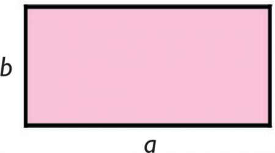

Bidimensional
El adjetivo bidimensional se utiliza para calificar a aquello que tiene dos dimensiones (2D). Un cuerpo que se proyecta a lo largo y a lo ancho, por ejemplo, cuenta con dos dimensiones. En cambio, si también tiene profundidad, se trata de un objeto con tres dimensiones (3D) y recibe el calificativo de tridimensional. Por lo general las dimensiones se definen a partir de la cantidad mínima de coordenadas que se necesitan para la especificación de un punto cualquiera en ella. De este modo, podemos afirmar que una línea es unidimensional: alcanza una sola coordenada para ubicar un punto.
| Numero: | Figura | Formulas | |
|---|---|---|---|
| Perimetro | Area | ||
| 1 | P = 4*l | A = l*l | |
| 2 |  | P = (2*a) + (2*b) | A = a*b |
| 3 |  |
P = a + b + c | A = (b*h)/2 |